Addam
Proprietor
Butcher · Fishmonger · Cheesemonger
A full-service butcher counter, a Gulf fish case and a cut-to-order cheese shop — at Pepper Place in Birmingham.
Named the best butcher shop in Alabama.Tasting Table · AL.com · Bham Now
01 Our Story
We come from humble beginnings and work hard to supply the best meat, seafood and cheese Birmingham has to offer.
Our family has been in the meat business since 1998. Through Evans Meats & Seafood we spent two decades supplying the South’s best restaurants — until March 2020, when those kitchens went dark overnight and we were left with a warehouse full of fresh product.
So we sold it curbside, then off the back of our trucks. It was a hit. People wanted the same cuts, the same Gulf fish and the same cheeses the area’s top chefs were cooking with. That’s the whole idea: restaurant-grade provisions, for your kitchen.
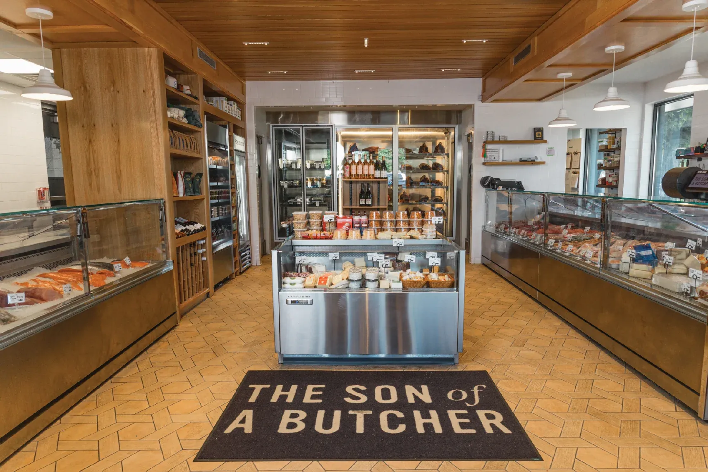
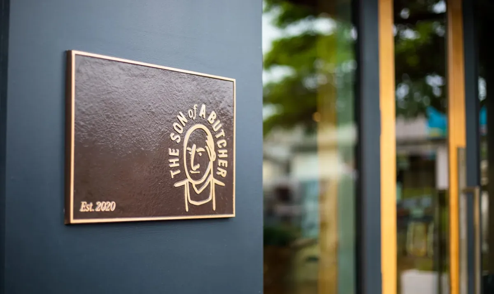
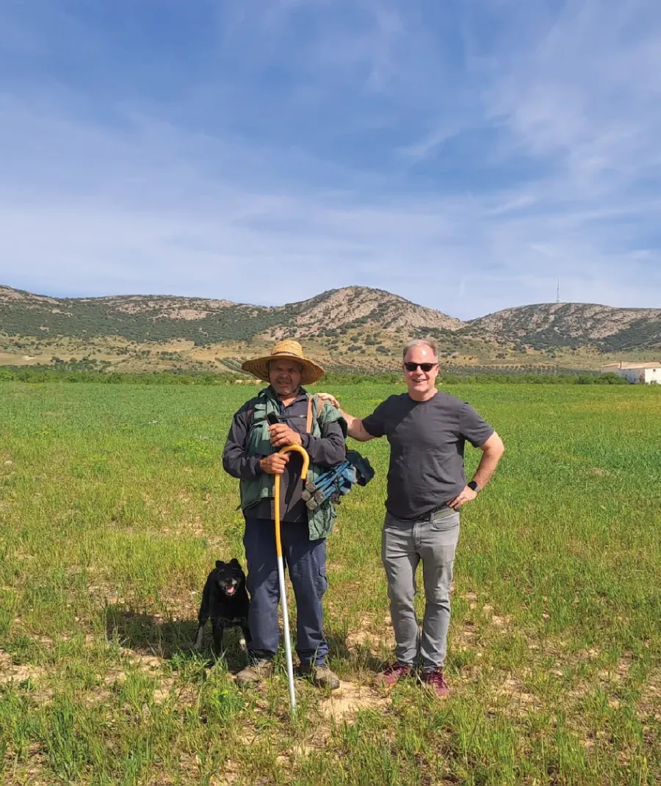
02 The Counters
We buy from small, family-run operations — the kind where we know the cattle buyer and the guy who owns the boats. Here’s who’s in the case.
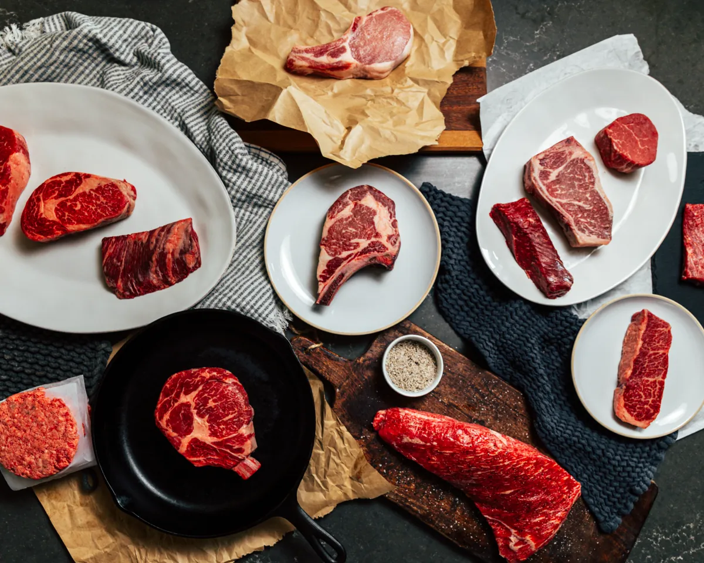
The Butcher CounterFamily farms, clean water, room to roam — and a cattle buyer we can call by name.
Smaller producers care how their product performs in your kitchen, because it’s a reflection of their work. That shows up in the marbling.
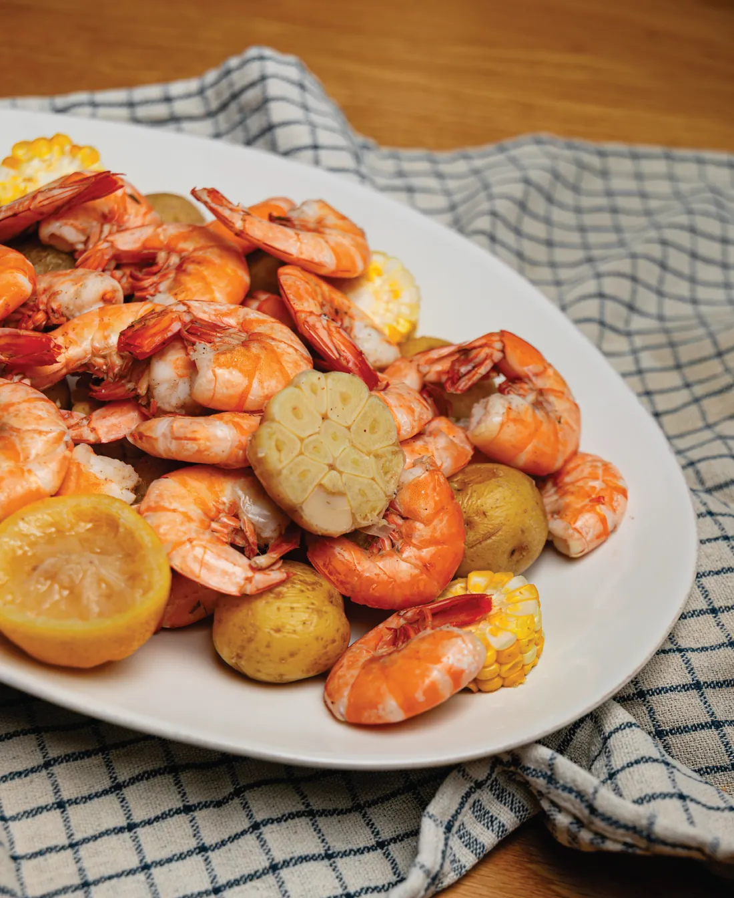
The Fish CounterOur trucks run to the Gulf several times a week. Fresh fish is all about trust.
We meet fishermen face to face — where they fish, how long the boats stay out, how the catch is stored on board. The Gulf is close and generous: fish, oysters, clams, shrimp and crab.
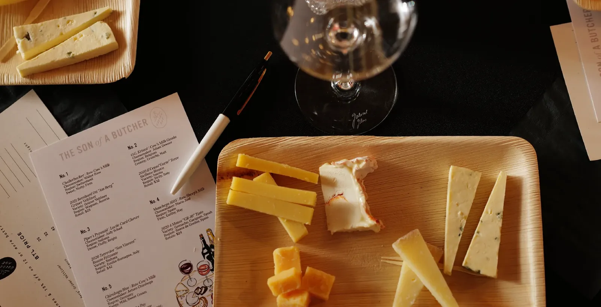
The Cheese CounterCut to order. Farmstead and artisanal wheels from down the road and across the ocean.
Our cheesemongers bring the best from all over the world to Birmingham — alongside our favorite local and regional makers, handcrafted salumi and a pantry worth raiding.
03 Sammies
Built every day from the good stuff behind the counter and our house-made toppings. Ready at 11 on weekdays and 9 on Saturdays — first come, first served.
Ready daily at 11
04 Ask the Counter
Butchers, fishmongers and cheesemongers with restaurant blood. Tap a face for their three favorite things in the shop right now.
Swipe for the whole crew →
05 The Son of a Butcher Direct
The same cuts from our counter, packed cold and sent to your door anywhere in the country. Curated boxes, thoughtfully packaged — and ready to gift.
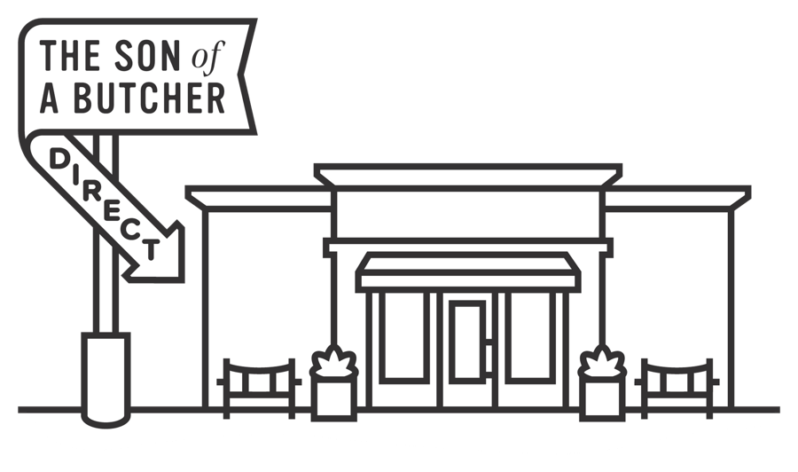
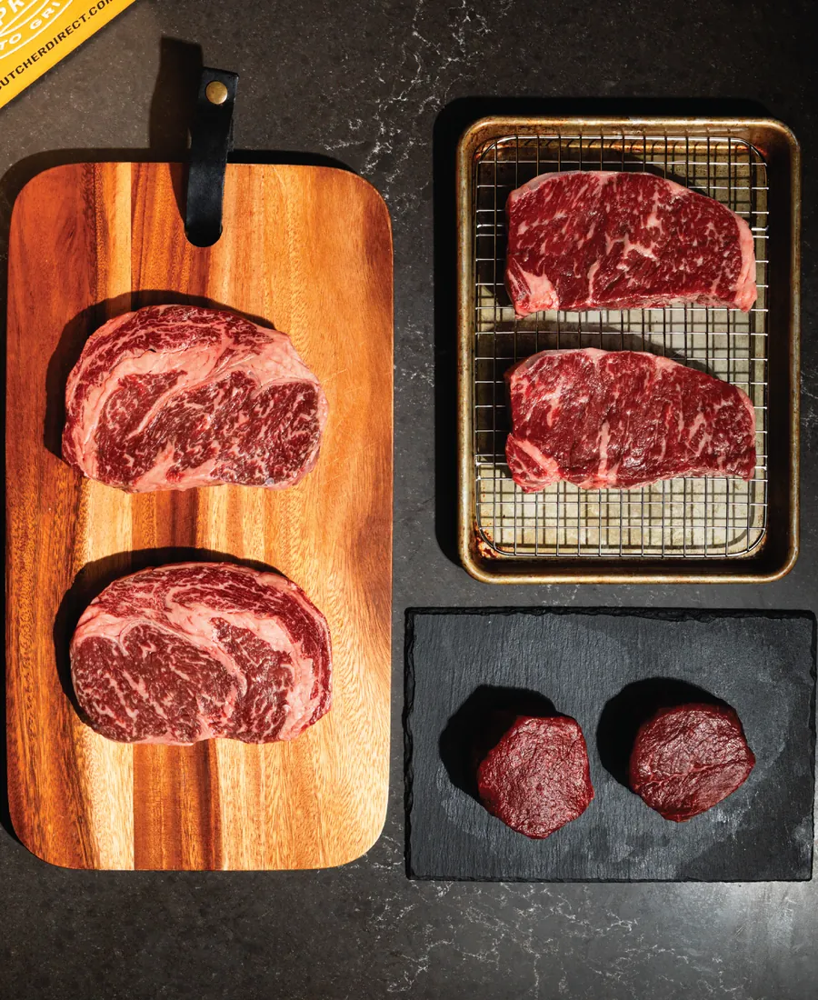
Our most elevated box. Two each of Domestic Wagyu boneless ribeyes, boneless strips and center-cut filets.
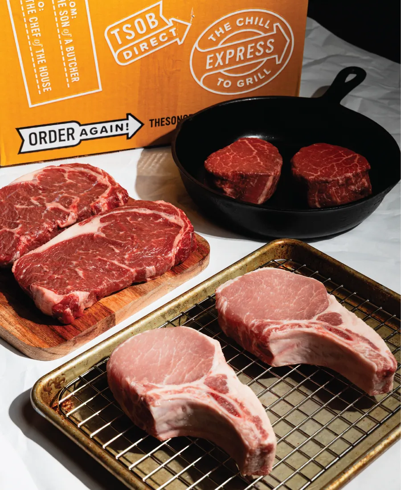
Two Prime center-cut filets, two Prime boneless ribeyes and two Iberian Duroc pork chops.
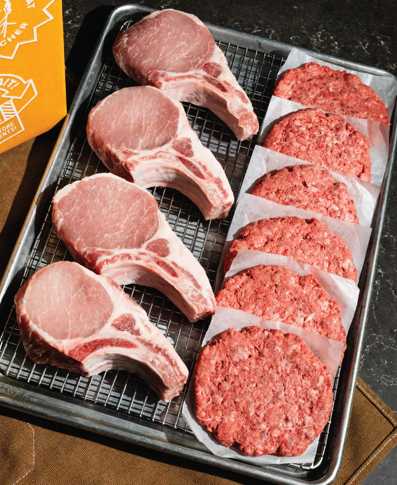
A classic for good reason: four Iberian Duroc pork chops and six Steakhouse Burgers.
Swipe for more boxes →
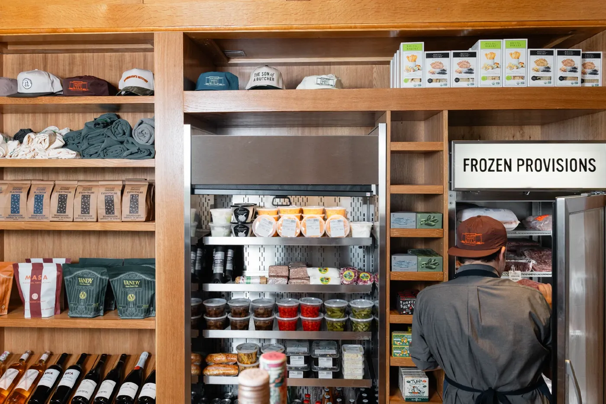
06 Events
A taste of the shop through classes, pairings and collabs. Follow us on Eventbrite to be the first to know what’s next.
“A truly amazing event. The pairings were perfect, and it was fun hearing the stories behind them all.”— Teresa B.
“The SOB team knocked it outta the park. Everyone was so nice and gracious — the shrimp were plentiful and super delicious.”— Jen C.
“Such a fun and delectable event. Definitely want to come to the next one.”— Katy L.
07 The Journal
Shop news, notes from the counter and the press that’s been kind enough to stop by.
08 From the Counter
Roasts, birds, hams and a wheel of cheese worth showing off — our favorite how-tos for what you just bought.
 Guide
GuideServing sizes, seasoning and cooking technique for prime rib.
 Recipe
RecipeJoyce Farms’ perfected recipe for their heritage bird.
 Video
VideoOur butchers walk through the brine kit, start to finish.
 Read
ReadFlavor, size, color and consistency — what we look for in a tin.
 Video
VideoTips from Nueske’s on preparing and carving your ham.
 Tutorial
TutorialTurn a cold wheel into the most prized hors d’oeuvre in the room.
Swipe for more →
09 Visit the Shop
Closed New Year’s Day, Memorial Day, Labor Day, Thanksgiving and Christmas.

Gift Cards
Digital gift cards for the cook in your life.
Buy a gift cardThe Newsletter
Exclusive recipes, featured products and first word on upcoming events.
Join the list